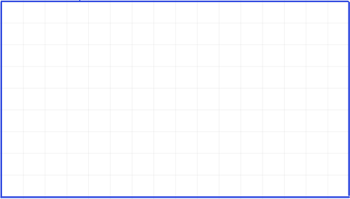
Introduction to Machine Learning
Dr. Mine Dogucu
Models - The Big Idea
A model is a simplified representation of the real world.
- Helps us understand or predict things
- Keeps important features
- Leaves out unnecessary details
Models - Example
A map is a model because it:
- represents reality;
- simplifies complexity;
- follows clear rules.
Includes: roads, intersections, landmarks
Excludes: every tree, person, and details of buildings
👉 Models are useful approximations, not perfect copies of reality.
Models = Rules + Simplification
Good models
- Keep what matters
- Ignore what doesn’t
- Follow consistent rules
👉 A model is like a structured, simplified view of reality
Statistical Model
A statistical model is a model for data that maps:
👉 Inputs (explanatory variables) → Outputs (response variable classification or prediction)
It also:
- Simplifies complex relationships
- Uses data to learn patterns
- Includes uncertainty (results are not perfectly predictable)
Classification Model
A model that sorts items into predefined categories or classes.
- Email clients filtering spam (spam or not spam).
- Doctors using data to identify diseases from X-rays (disease or no disease).
- Banks automatically detecting fraudulent credit card transactions (fraud or no fraud).
- Image recognition algorithm identifying an image of a cat, a dog, or a bird (cat, dog, bird).
Image Data
By turning images into data, we can find patterns in images.
Example:
- Identifying a tissue as cancerous or healthy
- An autonomous vehicle identifying a pedestrian, a car, a stop sign.
Step 0: Get into teams of 4 - 5
Step 1: Create a landscape drawing area, 16 squares by 9 squares
Step 2: Draw _______ within your drawing area in less than 15 seconds without showing it to your teammates.
Step 2: Draw a book within your drawing area in less than 15 seconds without showing it to your neighbors.
Step 2.5: Now you can take a look at each others’ drawings.
An example:
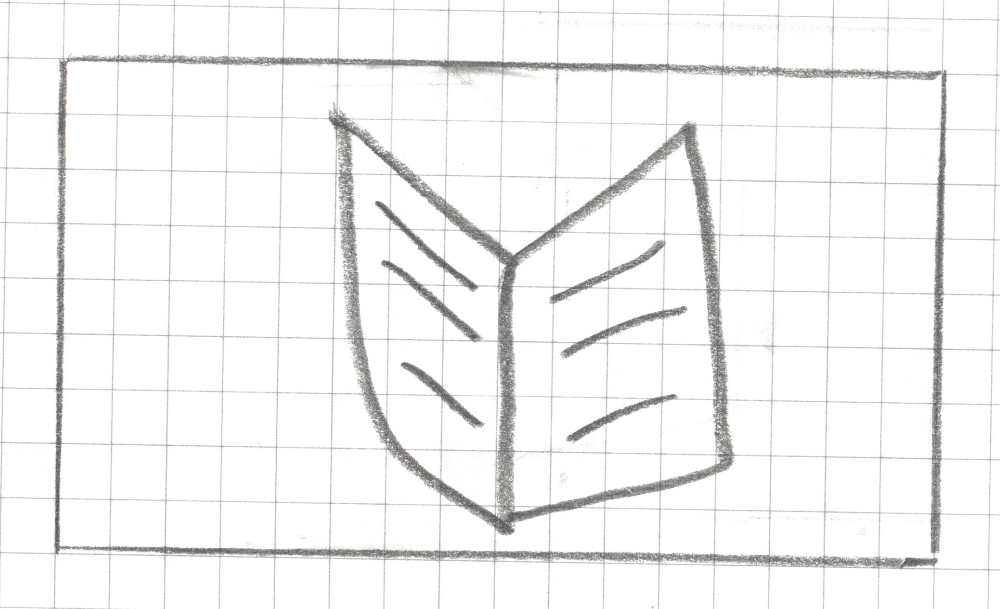
Step 3: Pixelate your drawing
For any square that has a line, a dot or any pen/pencil mark, shade the whole square.

Step 4: Write your algorithm
Use your drawing as well as the drawings of your teammates (only your teammates) to come up with an algorithm (a set of rules) that can identify an open book. In other words, the algorithm should should identify whether the drawn book is open or closed.
MY CLASSIFICATION ALGORITHM
Algorithm Name: _______________________
My Rule (write it step-by-step):
1. ____________________________________________________
2. ____________________________________________________
3. ____________________________________________________
4. Classification Decision:
if _________________ then predict “open”.
else predict “closed”.
The Vertical Gap Scanner
Go through the image one row at a time, from top to bottom.
For each row, check if it qualifies as a “Gapped Row.” A row is a “Gapped Row” if it meets both of these conditions:
- It has at least one filled-in square.
- It has 3 empty squares between its leftmost filled square and its rightmost filled square.
The Vertical Gap Scanner
Count the number of gapped rows and save it as
gap_row_count.Classification Decision:
ifgap_row_count>= 1thenpredict “open”.
elsepredict “closed”.
The Vertical Gap Scanner
Step 5: Test your model
| image_id | actual_class | predicted_class |
|---|---|---|
| 1 | ||
| 2 | ||
| 3 | ||
| 4 | ||
| 5 | ||
| 6 | ||
| 7 | ||
| 8 | ||
| 9 | ||
| 10 |
Image 1
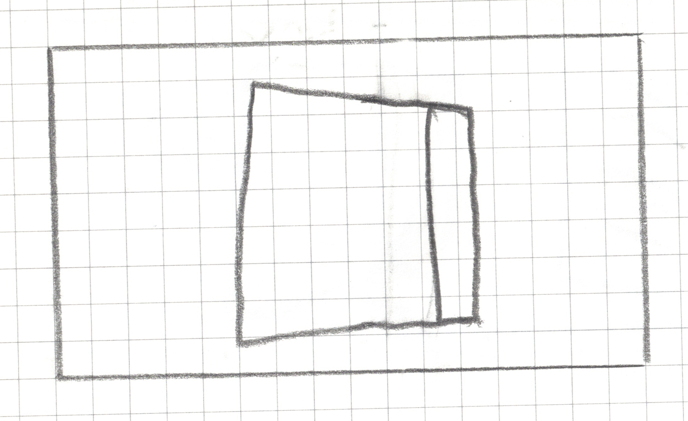
actual_class = closed
Image 1

predicted_class = ?
Image 2
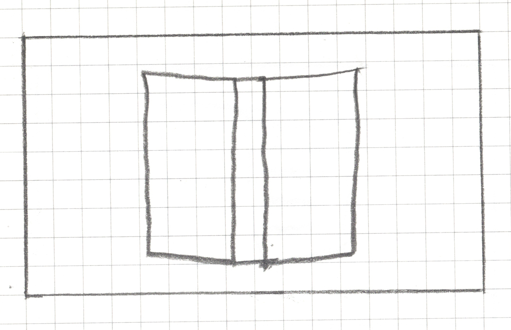
actual_class = open
Image 2

predicted_class = ?
Image 3
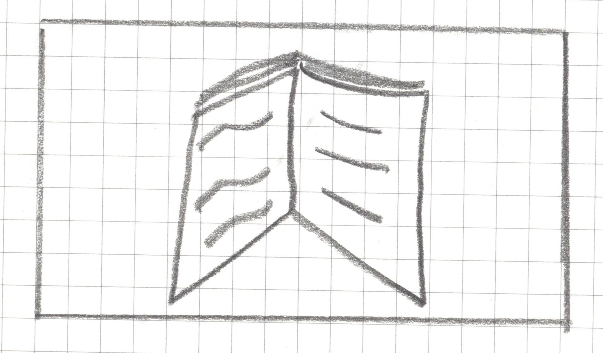
actual_class = open
Image 3

predicted_class = ?
Image 4
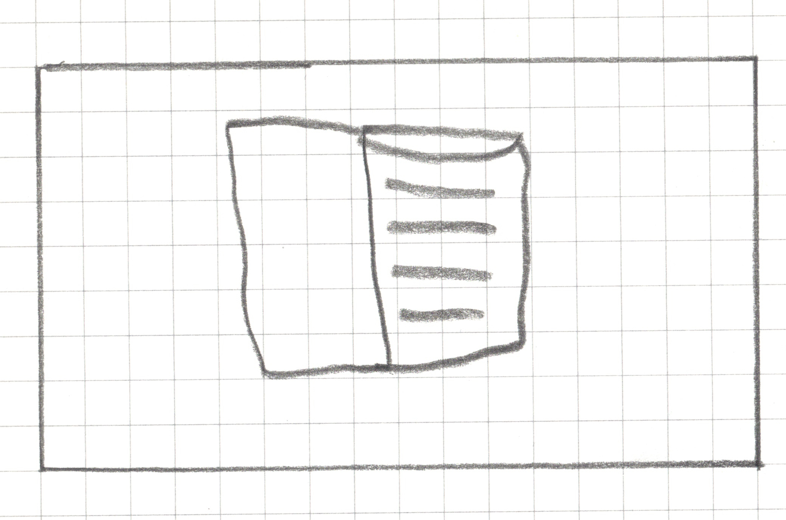
actual_class = open
Image 4

predicted_class = ?
Image 5

actual_class = closed
Image 5

predicted_class = ?
Image 6
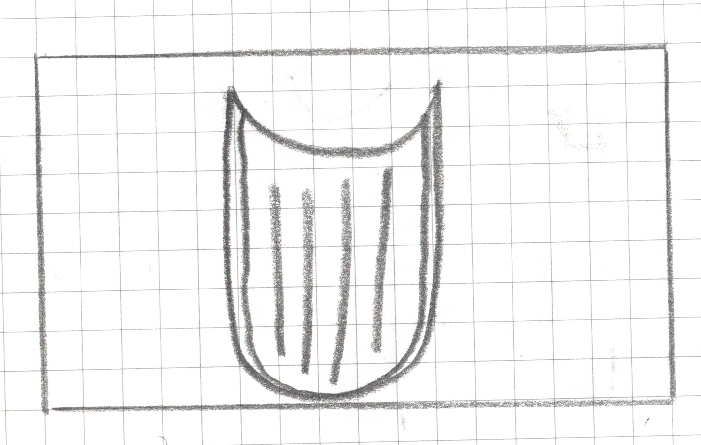
actual_class = closed
Image 6

predicted_class = ?
Image 7
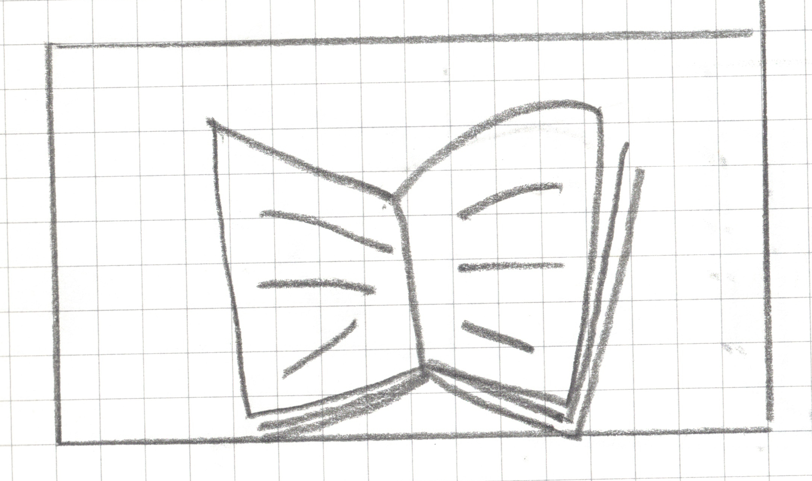
actual_class = open
Image 7

predicted_class = ?
Image 8
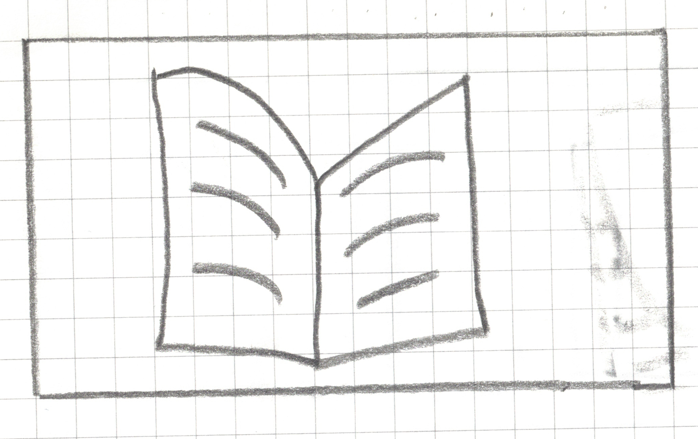
actual_class = open
Image 8

predicted_class = ?
Image 9
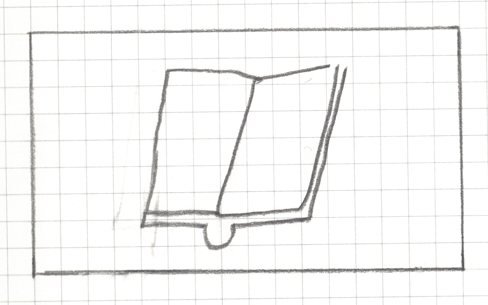
actual_class = open
Image 9

predicted_class = ?
Image 10
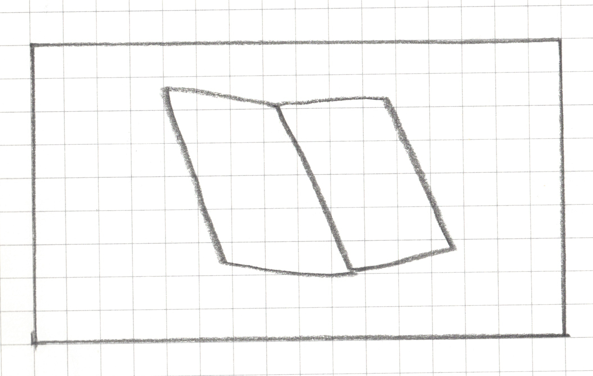
actual_class = open
Image 10
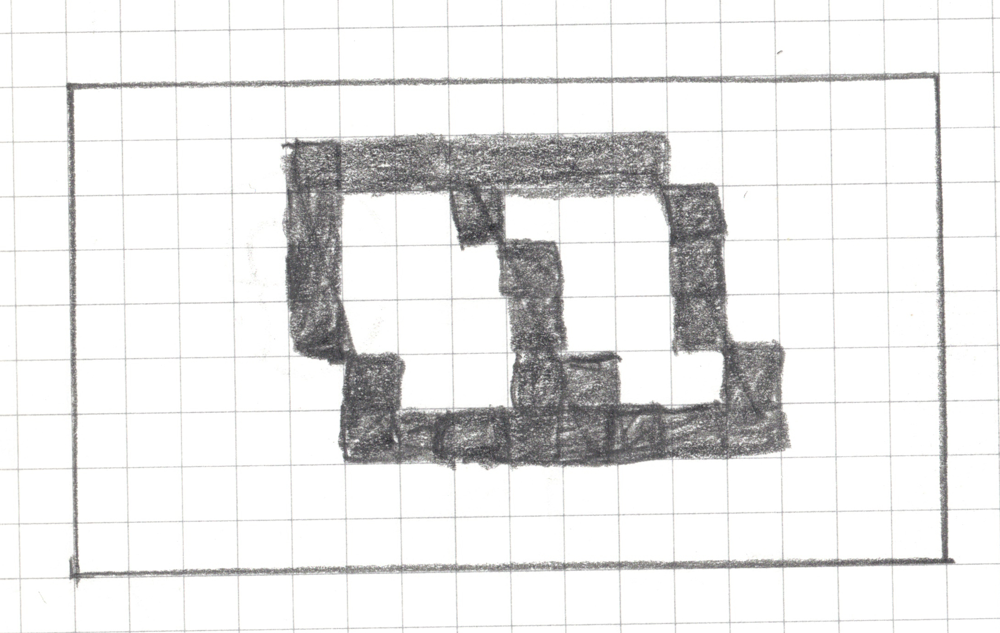
predicted_class = ?
More Testing Data
Model Evaluation
| Criteria | Predicted: OPEN | Predicted: CLOSED |
|---|---|---|
| Actual: OPEN | _________ (True Positive) |
________ (False Negative) |
| Actual: CLOSED | _______ (False Positive) |
________ (True Negative) |
Model Evaluation
True Positives (TP):
The model correctly predicted “OPEN” ____ times.True Negatives (TN):
The model correctly predicted “CLOSED” ____ times.False Positives (FP):
The model incorrectly predicted “OPEN” ____ times.False Negatives (FN):
The model incorrectly predicted “CLOSED” when the book was actually open ____ times.Overall Accuracy: (Correct / Total) = ____
Discuss
In a medical test, which one has worse consequences false negative or false positive? Discuss the implications of both of these possible results.
Detour
Fashion Models vs. Statistical Models
The Sewing Pattern as an Algorithm
A sewing pattern is a precise, step-by-step set of instructions:
Cut the fabric into pieces of specific shapes and sizes.
Pin piece A to piece B along a 5/8-inch seam allowance.
Stitch the side seams together.
Attach the sleeves to the armhole.
Install the lining.
Sew on the buttons and buttonholes.
The Finished Jacket as a Model
Once you follow the sewing pattern (algorithm) using a specific fabric and specific people’s measurements (your data), you end up with a completed, tailored jacket. That jacket IS the model.
Training a Model
Consider a clothing store who made a jacket that fits perfectly on their fashion models.
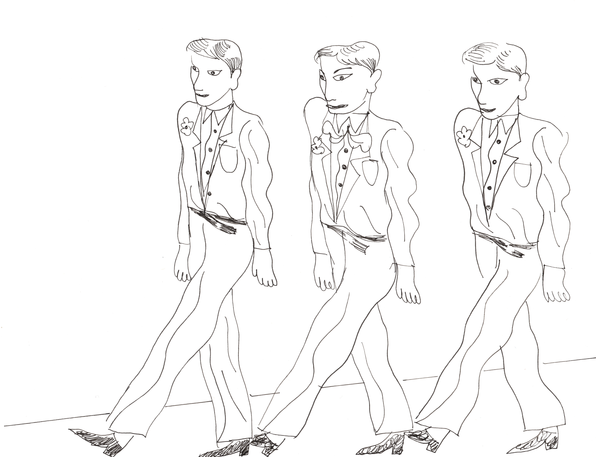
Testing a Model
When it comes to selling this jacket, they run into an issue. Can you identify the problem?
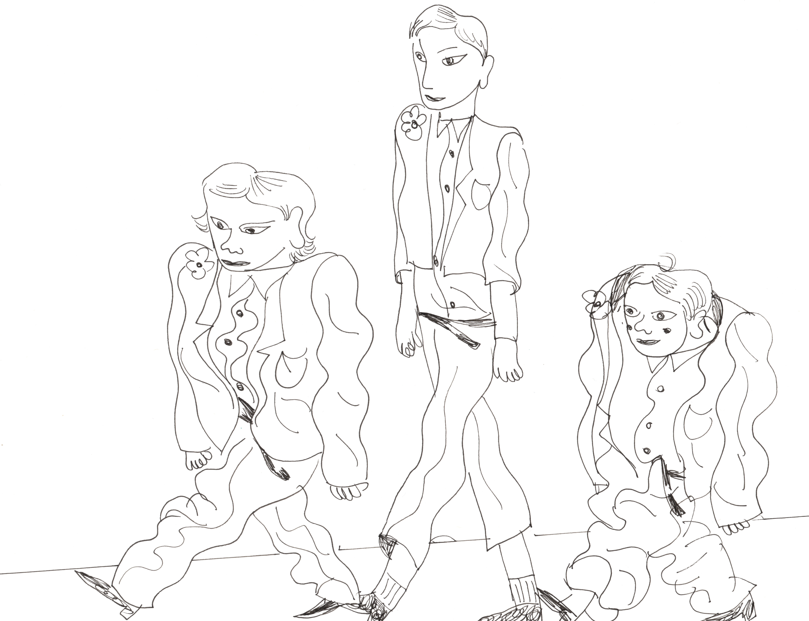
Training (Building) a Model
While training a model, you use the algorithm with the data at hand to build and refine the model. The algorithm tells you to stitch the two arms of the jacket but your data determines how long the arms will be.
Testing a Model
Testing checks whether the jacket (model) truly fits well in the real world, or whether it was only tailored perfectly to the original practice measurements (data) it was trained on. If it fits new sample well, the model generalizes well. If it looks awkward or doesn’t fit, the model has a problem — perhaps it was overfit, meaning it was too narrowly tailored (i.e., perfectly fit) to the original training data.
Key Take Aways
Computers See Data, Not Pictures. We learned to translate a visual concept (a book) into structured data (a grid of 0s and 1s) that a computer can understand.
An Algorithm is a Set of Rules. We created algorithms—step-by-step instructions—to sort our data. An algorithm is the recipe for finding patterns.
A Model is the Result of Training. Our final, specific rule (e.g., “Predict”open” if
gap_row_count>= 1”) is our model. It’s the finished cake we can use to make classifications.
Key Take Aways
No Model is Perfect. Every model has strengths and weaknesses. “All models are wrong, but some are useful” George Fox
Evaluation is Crucial. We must test our model on unseen data to find its flaws (False Positives and False Negatives) and truly understand how well it works. A model is only as good as its test results.
Binary Classification
Our response variable was categorical and had two categories (classes), i.e., open is a binary variable with TRUE or FALSE as possible values.
Thus the activity we just completed is a binary classification task.
Multiclass (multinomial) classification
open, closed, half-open
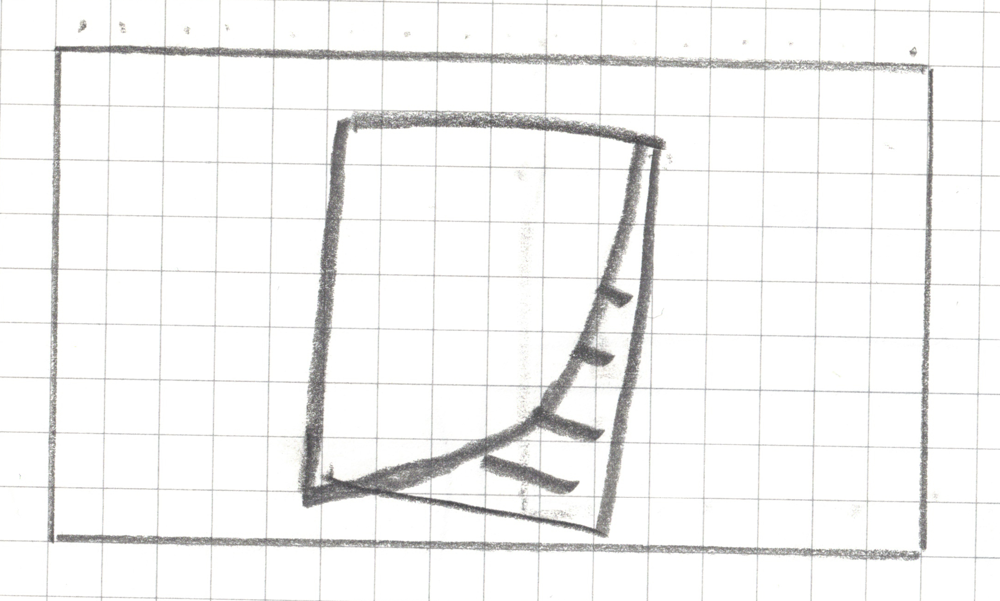